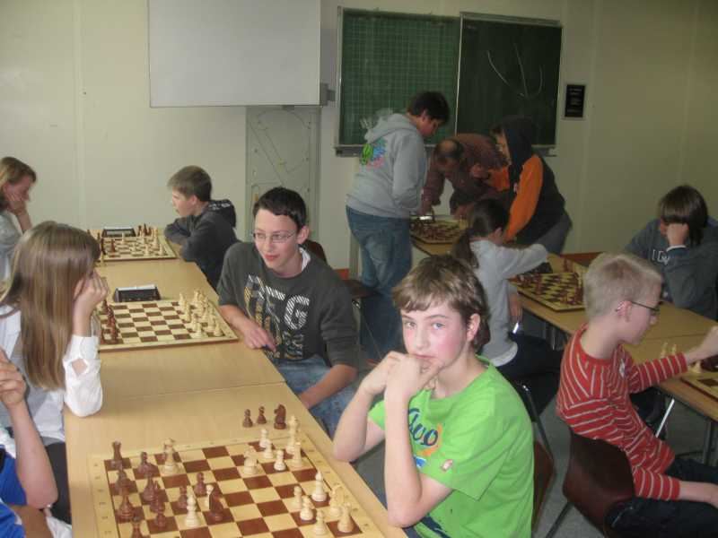
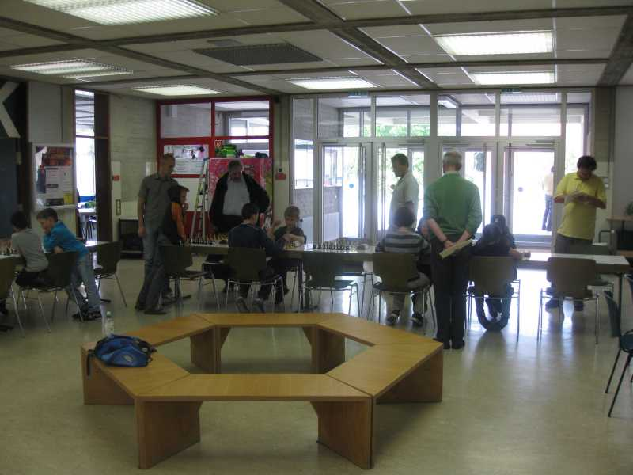
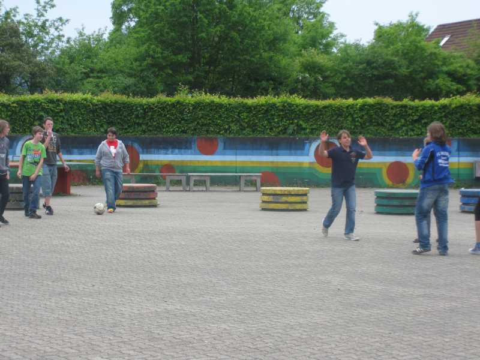
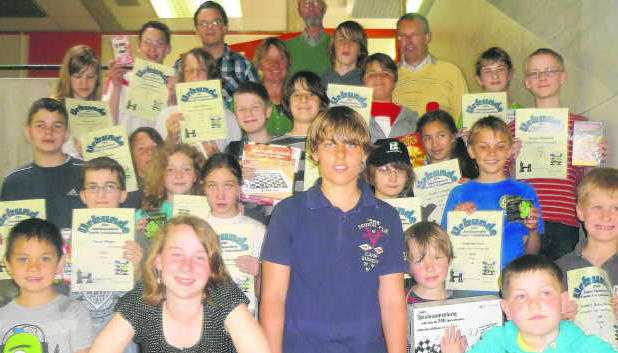

Zum JGP 2012 waren leider nicht viele Teilnehmer angereist.

Trotzdem gab es bei der Gruppe Ü12 interssante Spiele...

wie auch bei den Jüngeren in der U12.

In den Pausen zwischen den Spielen wurde entweder interessante Partien, wie hier das Laufenburger Derby Julian (Brotz) gegen Julian (Bahner) bewundert,

oder es wurde zur Abwechslung etwas auf dem Pausenhof gekickt.

Trotzdem waren alle heiß auf die Siegerehrung, die von Jugendleiter Jochen Bahner durchgeführt wurde. Frau Schäuble entrichtete Grußworte der Stadt Laufenburg und half bei der Preisverteilung

Statt dem üblichem Siegerfoto gibt es dieses Mal ein Foto aller Teilnehmer und Helfer. (Bild Röber)